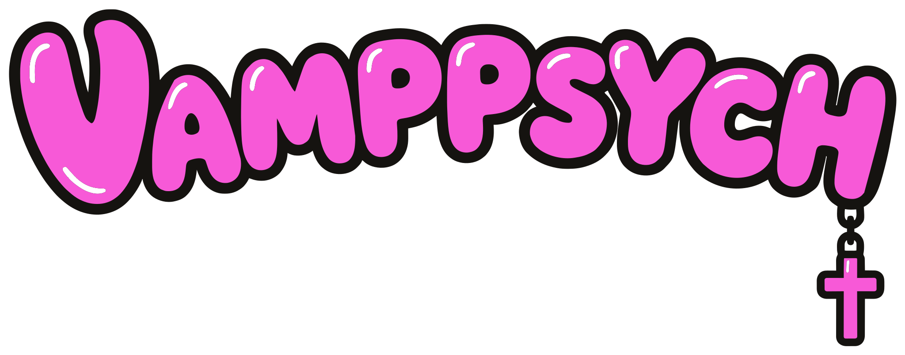
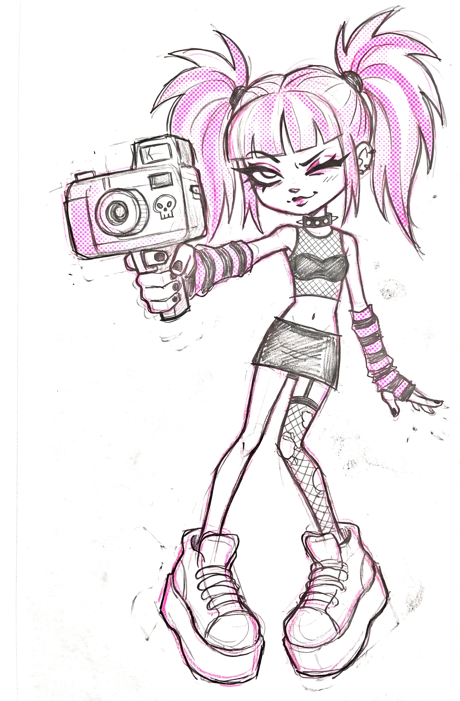

Want your picture taken? It's free. I shoot these in rounds whenever I've got a free week. Leave your info and I'll hit you up when the next one comes around. (*ﾉωﾉ)
I'm a filmmaker and I'm building a body of portrait work, so I need people to shoot. I light and grade these like film frames, not snapshots. You get a full color set and a moody black and white set back, usually within a couple of days.
Free either way. Nobody gets asked.
¿? Vamppsych · SATX ♡ you write it ♡ Want to tip? → cash app · $deadmanifest